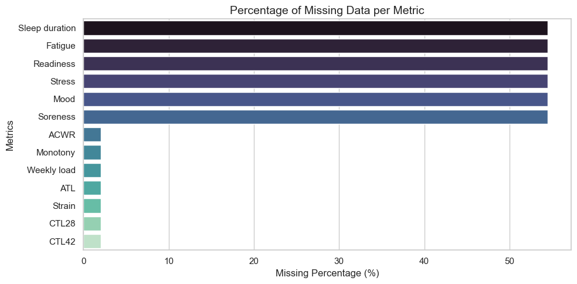
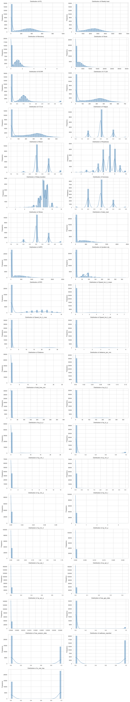
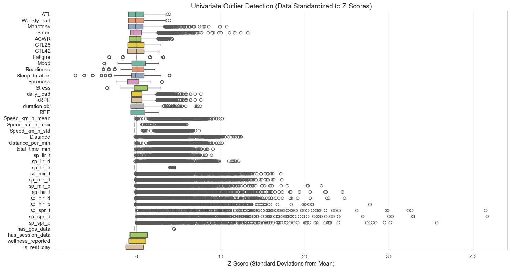
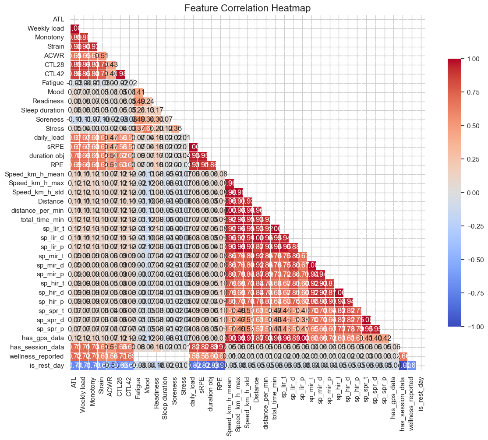
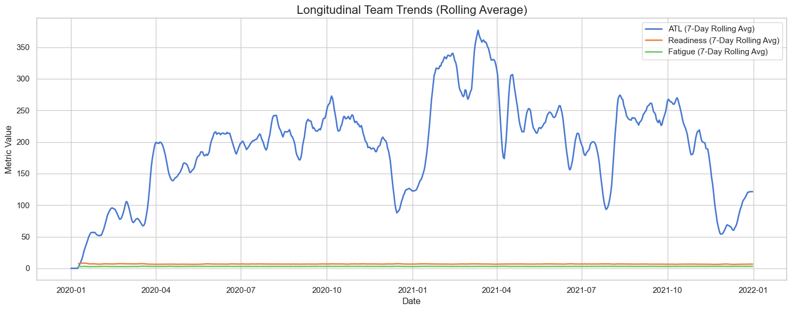

from subjective_metrics_pipeline import PlayerMetricsPipeline
from metrics_eda import MetricsEDA
from GPS_feature_extractor import GPSFeatureExtractor
from session_feature_extractor import SessionFeatureExtractor
from deephit_preprocessor import DeepHitPreprocessor
import matplotlib.pyplot as plt
import seaborn as sns
import missingno as msno
import pandas as pd
import numpy as np
from sklearn.preprocessing import PowerTransformer, StandardScalerData Prep for Time to Injury Forecasting DeepHit Model
This script replicates this paper https://arxiv.org/html/2601.19479v1 that builds a time-to-injury forecasting model based on the DeebHit model and uses SoccerMon data
1. Subjective Data Prep
# 1. Your exact, verified file paths
file_mapping = {
'data/subjective/training-load/atl.csv': 'ATL',
'data/subjective/training-load/weekly_load.csv': 'Weekly load',
'data/subjective/training-load/monotony.csv': 'Monotony',
'data/subjective/training-load/strain.csv': 'Strain',
'data/subjective/training-load/acwr.csv': 'ACWR',
'data/subjective/training-load/ctl28.csv': 'CTL28',
'data/subjective/training-load/ctl42.csv': 'CTL42',
'data/subjective/wellness/fatigue.csv': 'Fatigue',
'data/subjective/wellness/mood.csv': 'Mood',
'data/subjective/wellness/readiness.csv': 'Readiness',
'data/subjective/wellness/sleep_duration.csv': 'Sleep duration',
'data/subjective/wellness/soreness.csv': 'Soreness',
'data/subjective/wellness/stress.csv': 'Stress'
}
# 3. Instantiate WITH the mapping dictionary explicitly
pipeline = PlayerMetricsPipeline(mapping=file_mapping)
final_df = pipeline.run()
# Display the first few rows
final_df.head()🚀 Starting pipeline execution...
✅ Processed ATL: Generated 36550 rows.
✅ Processed Weekly load: Generated 36550 rows.
✅ Processed Monotony: Generated 36550 rows.
✅ Processed Strain: Generated 36550 rows.
✅ Processed ACWR: Generated 36550 rows.
✅ Processed CTL28: Generated 36550 rows.
✅ Processed CTL42: Generated 36550 rows.
✅ Processed Fatigue: Generated 36550 rows.
✅ Processed Mood: Generated 36550 rows.
✅ Processed Readiness: Generated 36550 rows.
✅ Processed Sleep duration: Generated 36550 rows.
✅ Processed Soreness: Generated 36550 rows.
✅ Processed Stress: Generated 36550 rows.
⏳ Formatting final schema. Total rows merged: 36550...
🎉 Pipeline complete! Final dataset shape: (36550, 15)| player_name | date | ATL | Weekly load | Monotony | Strain | ACWR | CTL28 | CTL42 | Fatigue | Mood | Readiness | Sleep duration | Soreness | Stress | |
|---|---|---|---|---|---|---|---|---|---|---|---|---|---|---|---|
| 0 | TeamA-0362cdd5-7a63-480a-a46a-62a99fb1692f | 2020-01-01 | 0.0 | 0.0 | 0.0 | 0.0 | 0.0 | 0.0 | 0.0 | NaN | NaN | NaN | NaN | NaN | NaN |
| 1 | TeamA-0362cdd5-7a63-480a-a46a-62a99fb1692f | 2020-01-02 | 0.0 | 0.0 | 0.0 | 0.0 | 0.0 | 0.0 | 0.0 | NaN | NaN | NaN | NaN | NaN | NaN |
| 2 | TeamA-0362cdd5-7a63-480a-a46a-62a99fb1692f | 2020-01-03 | 0.0 | 0.0 | 0.0 | 0.0 | 0.0 | 0.0 | 0.0 | NaN | NaN | NaN | NaN | NaN | NaN |
| 3 | TeamA-0362cdd5-7a63-480a-a46a-62a99fb1692f | 2020-01-04 | 0.0 | 0.0 | 0.0 | 0.0 | 0.0 | 0.0 | 0.0 | NaN | NaN | NaN | NaN | NaN | NaN |
| 4 | TeamA-0362cdd5-7a63-480a-a46a-62a99fb1692f | 2020-01-05 | 0.0 | 0.0 | 0.0 | 0.0 | 0.0 | 0.0 | 0.0 | NaN | NaN | NaN | NaN | NaN | NaN |
# Save to the current folder as a Parquet file
final_df.to_parquet("data/master_subjective_features.parquet", index=False)
print("✅ Saved as Parquet successfully!")✅ Saved as Parquet successfully!2. GPS Based Data Prep
# 1. Initialize the extractor (set to 50Hz)
gps_pipeline = GPSFeatureExtractor(hz=50, is_ms=True)
# 2. Point it at your folder of 6 months of data
master_gps_df = gps_pipeline.process_directory("data/objective-TeamB-2020/2020")
# single_gps_df = gps_pipeline.process_single_file(file_path='data/objective-TeamB-2020/2020/2020-06/2020-06-01/2020-06-01-TeamB-2f23d7d5-2326-49ce-b9c8-5a6303f785c5.parquet')
print(master_gps_df.head())
# single_gps_dfFound 1837 Parquet files across all months. Starting batch extraction...
-> Processed 50 / 1837 files...
-> Processed 100 / 1837 files...
-> Processed 150 / 1837 files...
-> Processed 200 / 1837 files...
-> Processed 250 / 1837 files...
-> Processed 300 / 1837 files...
-> Processed 350 / 1837 files...
-> Processed 400 / 1837 files...
-> Processed 450 / 1837 files...
-> Processed 500 / 1837 files...
-> Processed 550 / 1837 files...
-> Processed 600 / 1837 files...
-> Processed 650 / 1837 files...
-> Processed 700 / 1837 files...
-> Processed 750 / 1837 files...
-> Processed 800 / 1837 files...
-> Processed 850 / 1837 files...
-> Processed 900 / 1837 files...
-> Processed 950 / 1837 files...
-> Processed 1000 / 1837 files...
-> Processed 1050 / 1837 files...
-> Processed 1100 / 1837 files...
-> Processed 1150 / 1837 files...
-> Processed 1200 / 1837 files...
-> Processed 1250 / 1837 files...
-> Processed 1300 / 1837 files...
-> Processed 1350 / 1837 files...
-> Processed 1400 / 1837 files...
-> Processed 1450 / 1837 files...
-> Processed 1500 / 1837 files...
-> Processed 1550 / 1837 files...
-> Processed 1600 / 1837 files...
-> Processed 1650 / 1837 files...
-> Processed 1700 / 1837 files...
-> Processed 1750 / 1837 files...
-> Processed 1800 / 1837 files...
✅ Batch processing complete.
player_name Speed_km_h_mean \
0 TeamB-101fbccc-ded7-33e8-b421-eaeb534097ca 2.980424
1 TeamB-247a8333-f7b0-b7d2-cda8-056c3d15eef7 2.699237
2 TeamB-2f23d7d5-2326-49ce-b9c8-5a6303f785c5 2.804751
3 TeamB-38c1962e-9148-624f-eac1-c14f30e9c5cc 3.174872
4 TeamB-4405bb1f-56f7-48ba-bfa8-e795e4006952 3.284755
Speed_km_h_max Speed_km_h_std Distance distance_per_min \
0 23.880020 3.711525 11.910435 0.049674
1 27.020023 3.714236 10.795431 0.044987
2 25.450020 3.376985 9.838288 0.046746
3 27.020023 3.451950 12.268941 0.052915
4 25.370021 3.835196 12.852516 0.054746
total_time_min sp_lir_t sp_lir_d sp_lir_p sp_mir_t sp_mir_d \
0 239.773333 237.470000 11.244258 0.990394 1.956667 0.539803
1 239.966333 236.186333 9.648261 0.984248 2.923333 0.827341
2 210.463333 208.750000 9.326799 0.991859 1.403333 0.397770
3 231.863333 230.423333 11.843782 0.993789 1.176667 0.328340
4 234.766667 230.880000 11.702616 0.983445 3.190000 0.897818
sp_mir_p sp_hir_t sp_hir_d sp_hir_p sp_spr_t sp_spr_d sp_spr_p \
0 0.008160 0.346667 0.126374 0.001446 0.000000 0.000000 0.000000
1 0.012182 0.760000 0.278532 0.003167 0.096667 0.041298 0.000403
2 0.006668 0.293333 0.106723 0.001394 0.016667 0.006996 0.000079
3 0.005075 0.243333 0.088109 0.001049 0.020000 0.008711 0.000086
4 0.013588 0.680000 0.245087 0.002896 0.016667 0.006995 0.000071
date
0 2020-06-01
1 2020-06-01
2 2020-06-01
3 2020-06-01
4 2020-06-01 # Save to the current folder as a Parquet file
master_gps_df.to_parquet("data/master_gps_features.parquet", index=False)
print("✅ Saved as Parquet successfully!")✅ Saved as Parquet successfully!3. Session.json Data Prep
# 1. Initialize the extractor
session_pipeline = SessionFeatureExtractor("data/subjective/training-load/session.json")
# 2. Run the processing module
master_session_df = session_pipeline.process_daily_features()
# Save to the current folder as a Parquet file
master_session_df.to_parquet("data/master_session_features.parquet", index=False)
print("✅ Saved as Parquet successfully!")Loading raw session data from data/subjective/training-load/session.json...
Aggregating sessions to daily level...
✅ Session data successfully processed into daily features.
✅ Saved as Parquet successfully!4. Data Merge
def build_master_dataset(wellness_df: pd.DataFrame, session_df: pd.DataFrame, gps_df: pd.DataFrame) -> pd.DataFrame:
"""
Merges Wellness, Session, and GPS data into a single longitudinal timeline
per player, and engineers structural missingness flags + rest day logic.
"""
print("Initiating Master Merge Pipeline...")
# 1. Ensure 'date' columns are standardized as strings or datetimes across all tables
wellness_df['date'] = pd.to_datetime(wellness_df['date'])
session_df['date'] = pd.to_datetime(session_df['date'])
gps_df['date'] = pd.to_datetime(gps_df['date'])
# 2. Merge 1: Wellness + Session
print(" -> Merging Wellness & Session Data...")
master_df = pd.merge(
wellness_df,
session_df,
on=['date', 'player_name'],
how='outer'
)
# 3. Merge 2: (Wellness + Session) + GPS
print(" -> Merging GPS Data...")
master_df = pd.merge(
master_df,
gps_df,
on=['date', 'player_name'],
how='outer'
)
# 4. Sort the timeline chronologically for each player
master_df = master_df.sort_values(by=['player_name', 'date']).reset_index(drop=True)
print("\n" + "="*40)
print("POST-MERGE STRUCTURAL ENGINEERING")
print("="*40)
# A. GPS & Session Masks (Before any imputation)
master_df['has_gps_data'] = master_df['Distance'].notnull().astype(int)
master_df['has_session_data'] = master_df['duration obj'].notnull().astype(int)
print("✅ Created 'has_gps_data' and 'has_session_data' masks.")
# B. Wellness Mask
wellness_cols = ['Fatigue', 'Mood', 'Readiness', 'Sleep duration', 'Soreness', 'Stress']
existing_wellness_cols = [col for col in wellness_cols if col in master_df.columns]
if existing_wellness_cols:
# If any of the wellness columns are not null, they reported wellness that day
master_df['wellness_reported'] = master_df[existing_wellness_cols].notnull().any(axis=1).astype(int)
print("✅ Created 'wellness_reported' mask feature.")
# C. Safe Zero-Filling for Objective Missing Data
# If they didn't train, their physical output was physiologically zero.
session_cols = ['daily_load', 'sRPE', 'duration obj', 'RPE']
gps_cols = [col for col in gps_df.columns if col not in ['date', 'player_name']]
for col in session_cols + gps_cols:
if col in master_df.columns:
master_df[col] = master_df[col].fillna(0)
print("✅ Zero-filled missing physical load metrics.")
# D. Extract "Rest Day" Signal
# Must be done AFTER zero-filling so the NaN days are now treated as 0-load rest days
# We check for the column name variations to be safe
if 'daily_load' in master_df.columns:
master_df['is_rest_day'] = (master_df['daily_load'] == 0).astype(int)
elif 'Daily load' in master_df.columns:
master_df['is_rest_day'] = (master_df['Daily load'] == 0).astype(int)
elif 'Strain' in master_df.columns:
master_df['is_rest_day'] = (master_df['Strain'] == 0).astype(int)
if 'is_rest_day' in master_df.columns:
print("✅ Created 'is_rest_day' feature based on 0-load.")
print("\n✅ Master Dataset built successfully!")
print(f"Total shape: {master_df.shape}")
return master_df# ==========================================
# Execution
# ==========================================
raw_subjective_df = pd.read_parquet('data/master_subjective_features.parquet')
master_session_df = pd.read_parquet('data/master_session_features.parquet')
master_gps_df = pd.read_parquet('data/master_gps_features.parquet')final_master_df = build_master_dataset(raw_subjective_df, master_session_df, master_gps_df)Initiating Master Merge Pipeline...
-> Merging Wellness & Session Data...
-> Merging GPS Data...
========================================
POST-MERGE STRUCTURAL ENGINEERING
========================================
✅ Created 'has_gps_data' and 'has_session_data' masks.
✅ Created 'wellness_reported' mask feature.
✅ Zero-filled missing physical load metrics.
✅ Created 'is_rest_day' feature based on 0-load.
✅ Master Dataset built successfully!
Total shape: (37315, 41)5. Adding Injury Data
def add_deephit_survival_labels(master_df: pd.DataFrame, injury_path: str, horizon: int = 7) -> pd.DataFrame:
"""
Merges injury data, isolates injury ONSETS (ignoring ongoing recovery days),
and calculates rolling 'time-to-event' (duration) labels for DeepHit.
"""
print("Loading and formatting injury data...")
# 1. Load and clean the injury data
injury_df = pd.read_csv(injury_path)
injury_df['date'] = pd.to_datetime(injury_df['timestamp'], format='%d.%m.%Y').dt.strftime('%Y-%m-%d')
unique_injuries = injury_df[['player_name', 'date']].drop_duplicates()
unique_injuries['is_injured_today'] = 1
# 2. Merge with Master Data
master_df['date'] = pd.to_datetime(master_df['date']).dt.strftime('%Y-%m-%d')
df = pd.merge(master_df, unique_injuries, on=['player_name', 'date'], how='left')
df['is_injured_today'] = df['is_injured_today'].fillna(0).astype(int)
# 3. Sort chronologically
df['date'] = pd.to_datetime(df['date'])
df = df.sort_values(by=['player_name', 'date']).reset_index(drop=True)
# ========================================================
# Isolate the "Onset" of the injury
# ========================================================
print("Collapsing continuous injury blocks into single Onset events...")
# Check if the player was injured the day before
df['was_injured_yesterday'] = df.groupby('player_name')['is_injured_today'].shift(1).fillna(0)
# It is a NEW injury only if they are injured today, AND were healthy yesterday
df['injury_onset'] = ((df['is_injured_today'] == 1) & (df['was_injured_yesterday'] == 0)).astype(int)
# 4. Generate the DeepHit Labels
print(f"Calculating time-to-event within a {horizon}-day horizon...")
durations = np.full(len(df), horizon)
events = np.zeros(len(df), dtype=int)
dates = df['date'].values
# IMPORTANT: We now loop using the ONSET flag, not the raw injured flag
onset_flags = df['injury_onset'].values
players = df['player_name'].values
next_injury_idx = -1
current_player = None
for i in range(len(df) - 1, -1, -1):
if players[i] != current_player:
current_player = players[i]
next_injury_idx = -1
if onset_flags[i] == 1:
next_injury_idx = i
if next_injury_idx != -1:
days_to_injury = int((dates[next_injury_idx] - dates[i]) / np.timedelta64(1, 'D'))
if 0 < days_to_injury <= horizon:
events[i] = 1
durations[i] = days_to_injury
df['event'] = events
df['duration'] = durations
# Optional cleanup: drop the temporary columns
df = df.drop(columns=['was_injured_yesterday'])
print("✅ DeepHit survival labels generated successfully!")
print(f"Total Unique Injury Onsets Found: {df['injury_onset'].sum()}")
print(f"Total High-Risk Days (Approaching an onset within {horizon} days): {df['event'].sum()}")
return df# ==========================================
# Execution
# ==========================================
# Assuming you already have your final_soccermon_dataset.parquet loaded:
final_df = pd.read_parquet("data/final_soccermon_dataset.parquet")
# Apply the target generation
deephit_ready_dataset = add_deephit_survival_labels(final_df, "data/subjective/injury/injury.csv", horizon=7)
# saving parquet to memory
deephit_ready_dataset.to_parquet("data/deephit_ready_dataset.parquet")
# Let's peek at the targets for validation:
# display(deephit_ready_dataset[['player_name', 'date', 'is_injured_today', 'event', 'duration']].head(15))
display(deephit_ready_dataset.head(15))Loading and formatting injury data...
Collapsing continuous injury blocks into single Onset events...
Calculating time-to-event within a 7-day horizon...
✅ DeepHit survival labels generated successfully!
Total Unique Injury Onsets Found: 104
Total High-Risk Days (Approaching an onset within 7 days): 455| player_name | date | ATL | Weekly load | Monotony | Strain | ACWR | CTL28 | CTL42 | Fatigue | ... | sp_spr_d | sp_spr_p | has_gps_data | has_session_data | wellness_reported | is_rest_day | is_injured_today | injury_onset | event | duration | |
|---|---|---|---|---|---|---|---|---|---|---|---|---|---|---|---|---|---|---|---|---|---|
| 0 | TeamA-0362cdd5-7a63-480a-a46a-62a99fb1692f | 2020-01-01 | 0.0 | 0.0 | 0.0 | 0.0 | 0.0 | 0.0 | 0.0 | NaN | ... | 0.0 | 0.0 | 0 | 0 | 0 | 1 | 0 | 0 | 0 | 7 |
| 1 | TeamA-0362cdd5-7a63-480a-a46a-62a99fb1692f | 2020-01-02 | 0.0 | 0.0 | 0.0 | 0.0 | 0.0 | 0.0 | 0.0 | NaN | ... | 0.0 | 0.0 | 0 | 0 | 0 | 1 | 0 | 0 | 0 | 7 |
| 2 | TeamA-0362cdd5-7a63-480a-a46a-62a99fb1692f | 2020-01-03 | 0.0 | 0.0 | 0.0 | 0.0 | 0.0 | 0.0 | 0.0 | NaN | ... | 0.0 | 0.0 | 0 | 0 | 0 | 1 | 0 | 0 | 0 | 7 |
| 3 | TeamA-0362cdd5-7a63-480a-a46a-62a99fb1692f | 2020-01-04 | 0.0 | 0.0 | 0.0 | 0.0 | 0.0 | 0.0 | 0.0 | NaN | ... | 0.0 | 0.0 | 0 | 0 | 0 | 1 | 0 | 0 | 0 | 7 |
| 4 | TeamA-0362cdd5-7a63-480a-a46a-62a99fb1692f | 2020-01-05 | 0.0 | 0.0 | 0.0 | 0.0 | 0.0 | 0.0 | 0.0 | NaN | ... | 0.0 | 0.0 | 0 | 0 | 0 | 1 | 0 | 0 | 0 | 7 |
| 5 | TeamA-0362cdd5-7a63-480a-a46a-62a99fb1692f | 2020-01-06 | 0.0 | 0.0 | 0.0 | 0.0 | 0.0 | 0.0 | 0.0 | NaN | ... | 0.0 | 0.0 | 0 | 0 | 0 | 1 | 0 | 0 | 0 | 7 |
| 6 | TeamA-0362cdd5-7a63-480a-a46a-62a99fb1692f | 2020-01-07 | 0.0 | 0.0 | 0.0 | 0.0 | 0.0 | 0.0 | 0.0 | NaN | ... | 0.0 | 0.0 | 0 | 0 | 0 | 1 | 0 | 0 | 0 | 7 |
| 7 | TeamA-0362cdd5-7a63-480a-a46a-62a99fb1692f | 2020-01-08 | 0.0 | 0.0 | 0.0 | 0.0 | 0.0 | 0.0 | 0.0 | NaN | ... | 0.0 | 0.0 | 0 | 0 | 0 | 1 | 0 | 0 | 0 | 7 |
| 8 | TeamA-0362cdd5-7a63-480a-a46a-62a99fb1692f | 2020-01-09 | 0.0 | 0.0 | 0.0 | 0.0 | 0.0 | 0.0 | 0.0 | NaN | ... | 0.0 | 0.0 | 0 | 0 | 0 | 1 | 0 | 0 | 0 | 7 |
| 9 | TeamA-0362cdd5-7a63-480a-a46a-62a99fb1692f | 2020-01-10 | 0.0 | 0.0 | 0.0 | 0.0 | 0.0 | 0.0 | 0.0 | NaN | ... | 0.0 | 0.0 | 0 | 0 | 0 | 1 | 0 | 0 | 0 | 7 |
| 10 | TeamA-0362cdd5-7a63-480a-a46a-62a99fb1692f | 2020-01-11 | 0.0 | 0.0 | 0.0 | 0.0 | 0.0 | 0.0 | 0.0 | NaN | ... | 0.0 | 0.0 | 0 | 0 | 0 | 1 | 0 | 0 | 0 | 7 |
| 11 | TeamA-0362cdd5-7a63-480a-a46a-62a99fb1692f | 2020-01-12 | 0.0 | 0.0 | 0.0 | 0.0 | 0.0 | 0.0 | 0.0 | NaN | ... | 0.0 | 0.0 | 0 | 0 | 0 | 1 | 0 | 0 | 0 | 7 |
| 12 | TeamA-0362cdd5-7a63-480a-a46a-62a99fb1692f | 2020-01-13 | 0.0 | 0.0 | 0.0 | 0.0 | 0.0 | 0.0 | 0.0 | NaN | ... | 0.0 | 0.0 | 0 | 0 | 0 | 1 | 0 | 0 | 0 | 7 |
| 13 | TeamA-0362cdd5-7a63-480a-a46a-62a99fb1692f | 2020-01-14 | 0.0 | 0.0 | 0.0 | 0.0 | 0.0 | 0.0 | 0.0 | NaN | ... | 0.0 | 0.0 | 0 | 0 | 0 | 1 | 0 | 0 | 0 | 7 |
| 14 | TeamA-0362cdd5-7a63-480a-a46a-62a99fb1692f | 2020-01-15 | 0.0 | 0.0 | 0.0 | 0.0 | 0.0 | 0.0 | 0.0 | NaN | ... | 0.0 | 0.0 | 0 | 0 | 0 | 1 | 0 | 0 | 0 | 7 |
15 rows × 45 columns
6. EDA
eda_pipeline = MetricsEDA(df=final_master_df)
multivariate_anomalies = eda_pipeline.run_all()2026-05-22 00:24:12,013 - INFO - Analyzing missing data...Starting Sports Data EDA Suite...
----------------------------------------c:\Users\GARETHE\Projects\Personal-Website\Injury Prediction\metrics_eda.py:36: FutureWarning:
Passing `palette` without assigning `hue` is deprecated and will be removed in v0.14.0. Assign the `y` variable to `hue` and set `legend=False` for the same effect.
sns.barplot(x=missing_pct.values, y=missing_pct.index, palette="mako")
2026-05-22 00:24:12,540 - INFO - Plotting distributions and univariate outliers...

2026-05-22 00:24:31,499 - INFO - Generating correlation matrix...
2026-05-22 00:24:32,732 - INFO - Plotting longitudinal trends for ['ATL', 'Readiness', 'Fatigue']...
2026-05-22 00:24:32,982 - INFO - Running Isolation Forest for multivariate anomaly detection...
2026-05-22 00:24:32,991 - INFO - Columns used for Isolation Forest Index(['player_name', 'date', 'ATL', 'Weekly load', 'Monotony', 'Strain',
'ACWR', 'CTL28', 'CTL42', 'Fatigue', 'Mood', 'Readiness',
'Sleep duration', 'Soreness', 'Stress', 'daily_load', 'sRPE',
'duration obj', 'RPE', 'Speed_km_h_mean', 'Speed_km_h_max',
'Speed_km_h_std', 'Distance', 'distance_per_min', 'total_time_min',
'sp_lir_t', 'sp_lir_d', 'sp_lir_p', 'sp_mir_t', 'sp_mir_d', 'sp_mir_p',
'sp_hir_t', 'sp_hir_d', 'sp_hir_p', 'sp_spr_t', 'sp_spr_d', 'sp_spr_p',
'has_gps_data', 'has_session_data', 'wellness_reported', 'is_rest_day'],
dtype='str')
2026-05-22 00:24:33,321 - INFO - Detected 509 multivariate anomalies.----------------------------------------
EDA Complete.